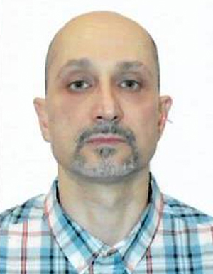

Михайленко Владислав Сергійович
доктор технічних наук, професор
Основні публікації:
Індексовані в Scopus чи Web of Science:
- Igor Petrov, Vladislav Mykhailenko, Roman Kharchenko, Yurii Gunchenko, Aleksandr Kochetkov and Oksana Zui “Intelligent analysis of the causes of the Challenger space shuttle disaster” // Proceedings of the 12th International Conference Information Control Systems & Technologies (ICST 2024) Odesa, Ukraine, September 23–25, 2024. CEUR Workshop Proceedings. – 2024. – Vol.3790. – CEUR-WS.org – P. 295-305. ISSN 1613-0073 (Scopus) https://ceur-ws.org/Vol-3790/paper26.pdf
- Kharchenko, R. Y., Kochetkov, A. V., & Mikhaylenko, V. S. (2022). ANALYSIS OF METHODS FOR AUTOMATED RESEARCH OF DC VOLTAGE CONVERTERS OF MODULAR STRUCTURE . Radio Electronics, Computer Science, Control, (3), 7. http://ric.zntu.edu.ua/article/view/265397
- Mykhailenko V.S, KharchenkoR .Yu, Shcherbinin V.A Analysis of the Predicting Neural Network Person Recognition System by Picture Image //Automatic Control and Computer Sciences. 2020. Vol. 54, No. 3. Р. 249 – 258.
- Mikhailenko, V.S., Kharchenko, R.Yu., Shcherbinin, V.A., Leshchenko, V.V. Using Neural Network Technologies to Simulate the Working Processes of Ship Steam Boilers // Conference Paper CEUR Workshop Proceedings this linkis disabled, 2021, 3126, р. 367–373
- Климчук А.А, Ложечников В.Ф, Михайленко В.С. Усовершенствованная математическая модель динамики уровня жидкости в барабанном парогенераторе как объекте управления / Международный научно-технический журнал «Проблемы управления и информатики. 2019. № 3. С. 54 – 64.
- Kharchenko, R. Y ., Mykhailenko, V. S., Kochetkov, A. V. (2023). DEVELOPMENT OF A NEURO-FUZZY INTELLIGENT NETWORK FOR MONITORING AND CONTROL OF MICROCLIMATE SYSTEMS // Automatic Control and Computer Sciences. 2023, Vol. 57, No. 1, pp. 27–36.
- Vitaliy Mezhuyev , Vladyslav Mykhailenko , Larysa Martynovych , Hanna Korenkova , Valerii Leshchenko , Sergii Stukalov Intellectual Improvement of the Control System for Harmful Emissions of a Ship's Utilizing Boiler//Information Control Systems & Technologies 2023, Odesa, Ukraine, September 21–23, 2023. CEUR Vol-3513- P153-162
У наукових виданнях, включених до переліку наукових фахових видань України:
- Михайленко В.С., Гвоздева І.М., Гунченко Ю.О., Коренкова Г.В., Шевченко Т.І. Інтелектуальна система аналізу розташування мін // Збірник наукових праць Військового інституту Київського національного університету імені Тараса Шевченка. – К. 2024. – № 82. – С. 48 – 58.
- Михайленко В.С., Гунченко Ю.О., Лещенко В.В., Зуй О.М. Методика синтезу нечіткої адаптивної системи управління складним об'єктом. // Збірник наукових праць Військового інституту Київського національного університету імені Тараса Шевченка. – К. 2024. – № 84. С. 54-66.
- Михайленко В.С., В.В. Лещенко, С.М. Сакали, Р.Ю. Харченко. Нейромережева система моніторингу показників шкідливих викидів суднового парового котла// Автоматизація суднових технічних засобів: наук. -техн. зб. [Фахове видання України]. – 2020. – Вип. 26. – Одесса: НУ «ОМА». – С. 41 – 57.
- Михайленко В.С., Щербінін В.А.,. Лещенко В.В, Харченко Р.Ю. Моделювання процесу утворення шкідливих викидів у вихідних газах суднових парових котлів // ІНФОРМАТИКА ТА МАТЕМАТИЧНІ МЕТОДИ В МОДЕЛЮВАННІ [Фахове видання України]. – 2020. – Вип. 10. № 3-4. С. 154 -166.
- Михайленко В.С., Лещенко В.В. Удосконалення управління процесом горіння палива в суднових котлах // Автоматизація суднових технічних засобів: наук. -техн. зб. [Фахове видання України]. – 2021. – Вип. 27. – Одеса: НУ «ОМА». – С. 73 – 83.
- Vladislav Mikhailenko, Roman Kharchenko, Valery Leshchenko. Method for approximating the value of the coefficients of the differential equals of the physical processes of a ship's steam boiler // Автоматизація суднових технічних засобів: наук. -техн. зб. [Фахове видання України]. ,2022. – Вип.28. – Одеса: НУ «ОМА». – С.121 – 131.
- Михайленко В.С., Коренкова Г.В., Зуй О.М.Аналіз системи паралельного нейроуправління динамічними обיִєктами // Збірник наукових праць Військового інституту Київського національного університету імені Тараса Шевченка. – К. 2023. – № 78. – С. 136 – 142.
- Михайленко В.С., Каменева А.В, Стукалов С.А. Моделювання нейромережевої системи ідентифікації та керування параметрами технічного об’єкта// Системні технології № 3(146), 2023- С. 10-23.
- Михайленко В.С., Шевченко Т.І., Стукалов С.А., Зуй О.М., Мартинович Л.Я. Нечітка експертна система для керування температурою повітря у приміщеннях торговельно-розважального центру // Збірник наукових праць Військового інституту Київського національного університету імені Тараса Шевченка. К.: ВІКНУ, 2023. № 79, 2023. – С.
Тези доповідей:
- Dr.Sci. Mykhailenko V., Leshchenko V., Martynovych L., Ph.D. Korenkova H. Neural network control with prediction of the dynamics of parameters of a complex ship object the хii international scientific-practical conference «Information Control Systems and Technologies» (ICST- ODESA – 2024) 23 th – 25 th September, 2024
- Михайленко В.С., Камєнєва А.В., Мартинович Л.Я.Інформаційні технології у наукових дослідженнях/ матеріали Всеукраїнської науково-технічної конференції «Інформаційні технології та інженерія» ЧНУ ім П. Могили , 2023. С 130-132.
- Михайленко В.С., Лещенко В. В. Шляхи підвищення енергоефективності агрегатів суднових енергетичних установок за рахунок використання інтелектуальних технологій [Текст] / В.С. Михайленко // Матеріали ХІ Міжнародної науково-технічної конференції «Сучасні підходи до високоефективного використання засобів транспорту» - Ізмаїл: ДІ НУ «ОМА», 2020. - С.274-277.
- Михайленко, В.С. Янков, П. С. Лещенко В.В. Удосконалення системи управління електроприводу циркуляційного вентилятора суднового допоміжного котла, з метою зниження шкідливих викидів газу в атмосферу // Матеріали Х міжнародної науково-технічної конференції «Суднова електроінженерія, електроніка і автоматика». –Одеса: НУ «ОМА», 2020. – С. 44 – 47.
- Крючков В.В., Михайленко В.С, Лещенко В.В. Підвищення ефективності експлуатації суднових технологічних засобів шляхом впровадження системи підтримки прийняття рішень на базі нечіткої логіки // Матеріали Х міжнародної науково-технічної конференції «Суднова електроінженерія, електроніка і автоматика». –Одеса: НУ «ОМА», 2020. – С. 18 – 22.
- Михайленко В.С. Нейромережева система прогнозування динаміки захворювання короновірусом // Матеріали 76-ї НАУКОВОЇ КОНФЕРЕНЦІЇ ПРОФЕСОРСЬКО-ВИКЛАДАЦЬКОГО СКЛАДУ І НАУКОВИХ ПРАЦІВНИКІВ., Одеса, ОНУ ім. Мечникова, 2021. С. 54- 56.
- Михайленко В.С., Лещенко В.В., Зеленюк С.О.Огляд методів адаптації в системах управління судновими об’єктами // Матеріали ХII міжнародної науково-технічної конференції «Суднова електроінженерія, електроніка і автоматика». –Одеса: НУ «ОМА», 2022. – С. 85 – 88.
Навчально-методичні посібникі:
- Михайленко В.С. Конспект лекцій з дисципліни «Суднові системи моніторингу», для студентів спеціальності 271 Морський та внутрішній водний транспорт. Одеса, НУ «ОМА», 2020 - 86 с. «Електронне видання».
- Михайленко В.С., Гунченко Ю.О., Мартинович Л.Я. Методичні вказівки до виконання лабораторних робіт з дисципліни «Нечітке моделювання в інформаційних технологіях» для студентів спеціальності 123 комп’ютерна інженерія. Одеса, ОНУ, 2022 – 62 с.
- Михайленко В.С., Левінський М.В. Комп’ютерно – інтегровані системи управління організаційно - технологічними комплексами. Навчальний посібник. Одеса: НУ «ОМА», 2024. - 162 с. Затверджено ВР НУ «ОМА», прот. № 7 від 29.02.2024р.
Захист дисертації на здобуття наукового ступеня:
- Захист докторської дисертації у спецраді Д 41.106.01, НУ «ОМА». Диплом доктора технічних наук ДД № 011862, рішення колегії МОН від 29 червня 2021 р.
Відповідальний виконавець наукових тем НДР:
- «Підвищення ефективності, надійності і якості функціонування суднових енергетичних установок» державний реєстраційний номер № 0115U003582, що виконана в НУ «ОМА», тема «Аналіз методів ідентифікації і адаптації об’єктів регулювання агрегатів СЕУ»
- «Методи і способи підвищення ефективності СЕУ» державний реєстраційний номер № 0117U005137, яка також виконана в НУ «ОМА», тема «Аналіз інтелектуальних систем управління об’єктів СЕУ»., 2018-2023 рр.
Підвищення кваліфікації, сертифікати:
- Мовний сертифікат (англійський) 054-ONU2022
- Стажування на кафедрі інформаційних технологій Одеського державного екологічного університету з 20 лютого 2023 р. по 2 квітня 2023 р. за програмою «Інформаційні технології в професійній діяльності фахівця» обсягом 180 академічних годин, 6 кредитів ЄКТС (дистанційно). Затверджено Наказ № 424-18 від 20.03.2023 р
Дисципліни, що викладає:
- Машинне навчання Робоча програма; Силабус
- Класифікація образів Робоча програма; Силабус
- Інтелектуальний аналіз даних і методи machine learning Робоча програма; Силабус
- Інформаційні технології в наук. дослід. Робоча програма; Силабус
- Нечіткі системи (fuzzy) Робоча програма; Силабус
- Нейронні мережи в кіберфізичних системах Робоча програма; Силабус
- Технології захисту інформації Робоча програма; Силабус
- Інтернет Речей Робоча програма; Силабус
- Інтелектуальні системи комп'ютерного зору Робоча програма; Силабус
- Методи класифікаціі та розпізнавання образівРобоча програма; Силабус